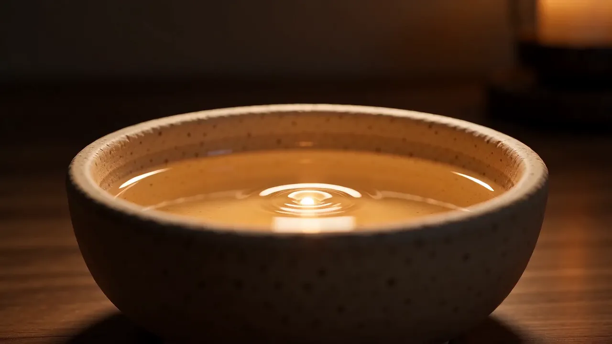
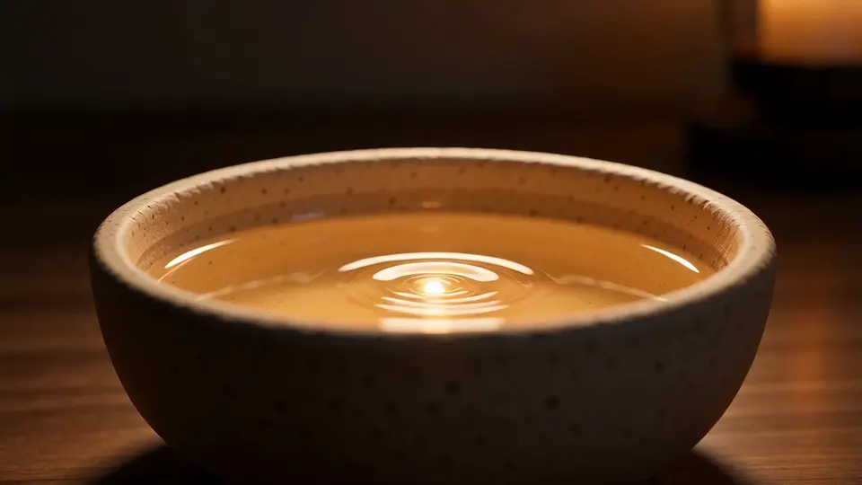
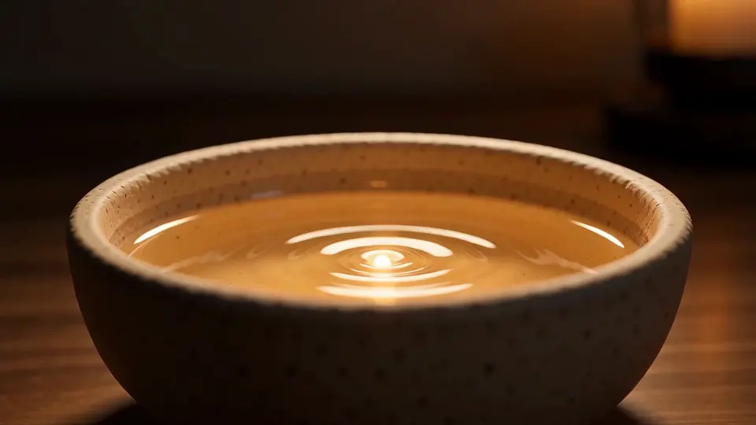
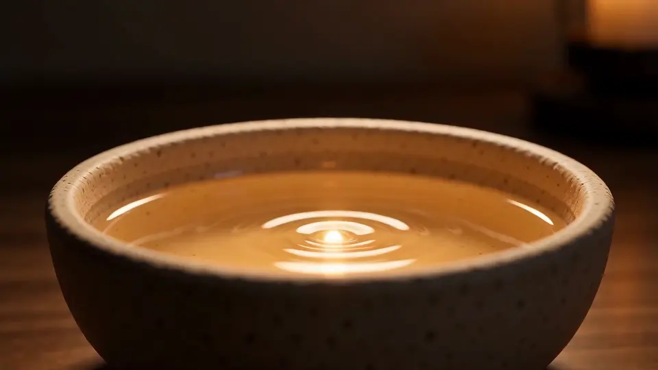
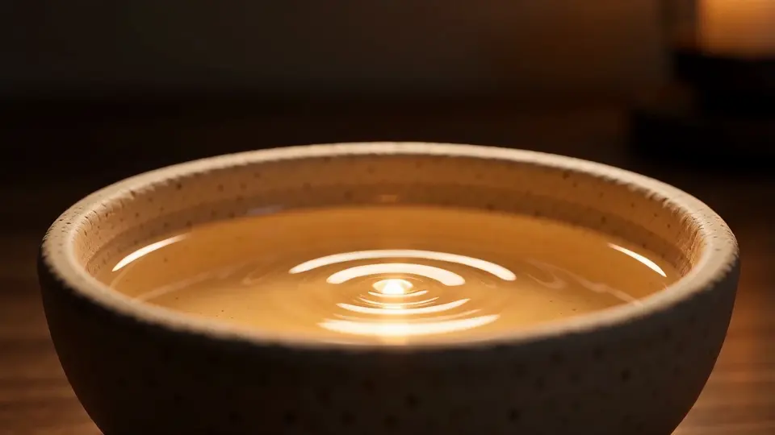

HavenArrive somewhere softer.
Nine rooms by the sea, kept slow on purpose: a refuge rather than a hotel.
Haven is a sample brand. Every name and figure on this page is sample content.
Nine rooms, each with its own weather
Four of them below. All are warmed by wood or a hot stone, and none has a television.

The Lookout
Under the eaves, with a window seat that faces the harbour wall and the first boats.

The Salt Room
A low bed, limewashed walls and a bath deep enough to read in.

The Net Loft
The old fishing loft, with two beds up a ladder and a long table below for supper.

The Garden Cell
A small room for one, opening onto the herb beds and the morning bread smell.
- Rooms
- 9
- Steps to the sea
- 27
- Check-in
- From 4 pm
- Nearest station
- 20 minutes by car
The imagery is sample footage of one candle and one bowl, framed four ways. It is not a photograph of these rooms.
A day at the house, unhurried
Nothing here is compulsory. This is simply how the house tends to move.
08:00
Tell us when you would like to arrive.
We keep the house small on purpose. Send your dates and we will write back within a day.
We came for a weekend and slept nine hours the first night. The sound of the sea did what the doctor could not.
Haven is a sample brand from Landscape Lab. The imagery is sample footage and the form sends nothing.Back to the Haven pageالعربية